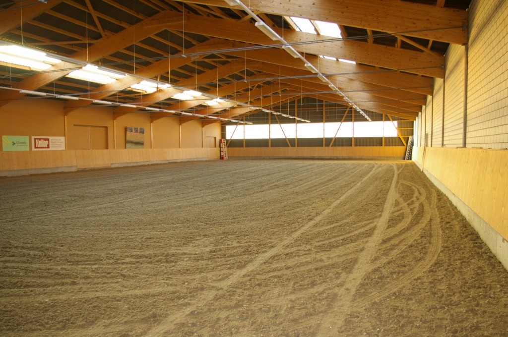

Die Reithalle
Reithallen sind der perfekte Ort um eine Reitstunde durchzuführen oder eine Bodenarbeitslektion mit dem Pferd zu besuchen. Einige Reitställe besitzen deshalb eine eigene Halle oder zumindest einen Reitplatz. Der Sandboden schont die Gelenke der Pferde.
